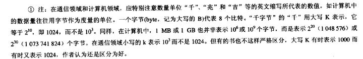
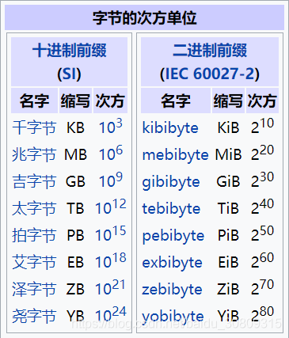
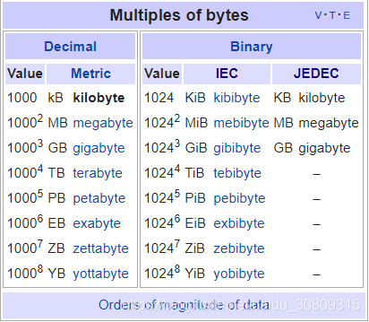
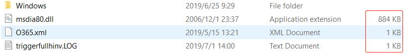

- 谢希仁《计算机网络》注释

- 国际标准（SI/IEC/JEDEC）
KiB(IEC) --> 1KiB = 1,024 Byte
KB(SI) --> 1KB = 1,000 Byte
KB(JEDEC) --> 1KB = 1,024 Byte
SI 国际单位制，国际单位制以七个基本单位为基础，包括长度 - 米 m，质量 - 千克 kg，时间 - 秒 s，电流 - 安培 A，热力学温度 - 开尔文 K，物质的量 - 摩尔 mol，发光强度 - 坎德拉 cd;
IEC 国际电工委员会是世界上最早的国际标准化组织，于 1906 年成立，主要是负责有关电气工程和电子工程领域中的国际标准化工作。
JEDEC 固态技术协会是固态及半导体工业界的一个标准化组织，制定固态电子方面的工业标准。


- Windows 里的 KB 是 JEDEC 的标准

- 为什么会有 1KB=1000B？
（1）二进制算术不如十进制算术方便（喜欢 10 的幂，而不是 2 的幂，内存越大，误差越大，逐渐不适用）
（2）制造商通常使用该术语（反正都是 kb，哪个看上去更好看？你的磁盘是否缩水了？）
（3）标准和实施系统中不兼容（设计人员和实际操作人员，比如网络带宽方面，100Mb 是真的吗）
（4）1kg=1000g, 1km=1000m, 所以 1kb=1000b（思维定势）
（5）行业差异